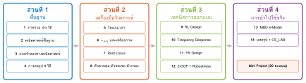
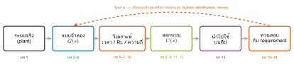
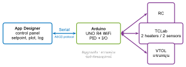
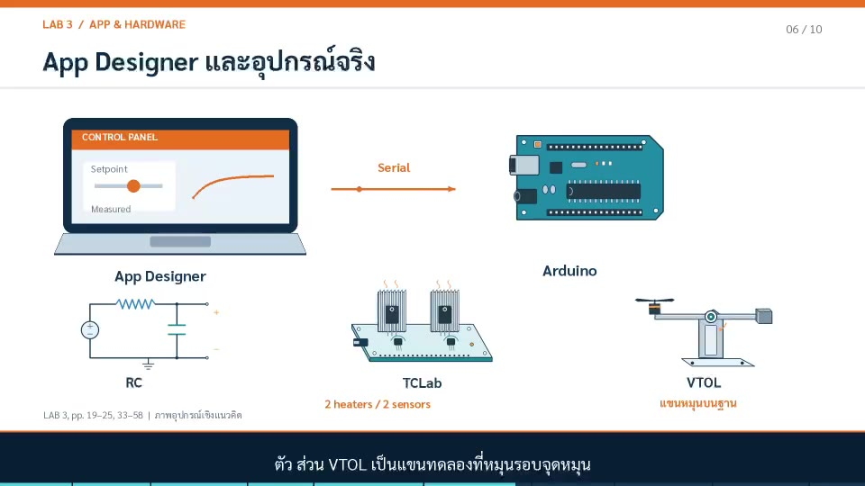

01068007 ระบบควบคุม: การวิเคราะห์และการออกแบบเชิงแบบจำลอง
บทที่ 14 บทสรุปรายวิชา Course Summary · Control Systems Laboratory
แบบจำลอง · วิเคราะห์ · ออกแบบ · นำไปใช้ · ทวนสอบ — บทที่ 1–13 · LAB 1–3 · Mini Project
รศ.ดร.อาจินต์ น่วมสำราญ
ภาควิชาวิศวกรรมการวัดและควบคุม คณะวิศวกรรมศาสตร์ สถาบันเทคโนโลยีพระจอมเกล้าเจ้าคุณทหารลาดกระบัง
บทนี้ใช้ทำอะไร ภาพรวม
ทบทวนทั้งรายวิชา บทที่ 1–13 ในเส้นเรื่องเดียว: ระบบจริง → แบบจำลอง → วิเคราะห์ → ออกแบบ → นำไปใช้ → ทวนสอบ
รวมสูตรและเกณฑ์ตัดสินใจ ที่ต้องใช้จริง
เชื่อมกับปฏิบัติการ CS_LAB (LAB 1–3) ที่ทำแนวคิดเดียวกันบนเครื่องมือและอุปกรณ์จริง
เตรียม Mini Project (MBD V-Model) และการสอบปลายภาค
ประโยคเดียวของวิชา
ระบบควบคุมที่ดีเริ่มจากแบบจำลองที่เชื่อถือได้ วิเคราะห์ด้วยเครื่องมือที่เหมาะกับคำถาม ออกแบบภายใต้ข้อจำกัดจริง และพิสูจน์ด้วยหลักฐาน ทุกขั้น
วิธีใช้สไลด์ชุดนี้
แต่ละหน้าสรุปหนึ่งบท: แนวคิดหลัก · สูตร · ข้อผิดพลาดที่พบบ่อย · ลิงก์ไปบทเต็ม
01068007 Control Systems · Chapter 14 · รศ.ดร.อาจินต์ น่วมสำราญ · PDF 2 / 32
แผนที่รายวิชา: 4 ส่วน 14 บท ภาพรวม

ส่วนที่ 1 สร้างภาษาและแบบจำลอง · ส่วนที่ 2 ให้เครื่องมือวิเคราะห์ · ส่วนที่ 3 ใช้เครื่องมือนั้นออกแบบ · ส่วนที่ 4 นำตัวควบคุมไปทำงานจริงและพิสูจน์ผล
01068007 Control Systems · Chapter 14 · รศ.ดร.อาจินต์ น่วมสำราญ · PDF 3 / 32
เส้นเรื่องเดียวของทั้งวิชา ภาพรวม

ถามก่อนเลือกเครื่องมือ : อยากรู้ผลตอบสนอง (เวลา), ผลของ gain (RL), หรือ margin และ robustness (ความถี่)?
ออกแบบจาก requirement : $M_p$, $t_s$, $e_{ss}$, PM, $M_s$, ข้อจำกัดของ actuator
ปิดวงด้วยหลักฐาน : MIL → SIL → PIL → HIL และผลต่างทุกขั้นต้องอธิบายได้
01068007 Control Systems · Chapter 14 · รศ.ดร.อาจินต์ น่วมสำราญ · PDF 4 / 32
CLO ของรายวิชากับบทที่เกี่ยวข้อง ภาพรวม
CLO บทหลัก บทรอง CLO1 1 ภาพรวม ประวัติ 3 CLO2 2 คณิตศาสตร์, 3 แบบจำลอง 4, 5 CLO3 4 การลดรูป 6 CLO4 5 โดเมนเวลา, 6 $e_{ss}$ และเสถียรภาพ 7, 9, 10 CLO5 7 Root Locus, 8 ตัวควบคุม, 9 RL Design 11, 12, 13 CLO6 10 FRA, 11 FR Design, 12 2-DOF + Robustness 8, 13 CLO7 13 MBD V-Model, 14 Mini Project ทุก CLO
CLO7 เป็น Must-Pass
Mini Project (20 คะแนน) ต้องแสดงครบ MIL / SIL / PIL / HIL / Standalone พร้อมหลักฐานการทวนสอบ — ใช้ทุกบทที่ผ่านมา
01068007 Control Systems · Chapter 14 · รศ.ดร.อาจินต์ น่วมสำราญ · PDF 5 / 32
บทที่ 1–2: ภาพรวม และคณิตศาสตร์ที่ใช้ตลอดวิชา ส่วนที่ 1 พื้นฐาน
บทที่ 1 ภาพรวม
วงเปิด (open loop) กับวงปิด (closed loop): วงปิดลดผลของ disturbance และความไม่แน่นอนของ plant แต่เสี่ยงต่อเสถียรภาพ
องค์ประกอบ: reference → controller → actuator → plant → sensor → feedback
หลักไมล์: Watt governor (1788), negative-feedback amplifier ของ Black (1927), Nyquist (1932), Bode (ช่วงทศวรรษ 1940), root locus ของ Evans (1948), state space / Kalman (1960)
บทที่ 2 คณิตศาสตร์
Laplace: $\mathcal{L}\{\dot f\}=sF(s)-f(0)$, ตาราง step, ramp, $e^{-at}$, $\sin\omega t$
partial fractions → ขั้วแต่ละตัวคือ mode ของผลตอบสนอง
final value theorem: $y(\infty)=\lim_{s\to0}sY(s)$ (ใช้ได้เมื่อระบบเสถียร)
ขั้วซ้ายมือ = ลู่เข้า, ขั้วบนแกน $j\omega$ = แกว่งค้าง, ขั้วขวามือ = ไม่เสถียร
01068007 Control Systems · Chapter 14 · รศ.ดร.อาจินต์ น่วมสำราญ · PDF 6 / 32
บทที่ 3: แบบจำลองทางคณิตศาสตร์ ส่วนที่ 1 พื้นฐาน
ระบบ ตัวเก็บพลังงาน ตัวสูญเสีย ไฟฟ้า $L$, $C$ $R$ กลเชิงเส้น $m$, $k$ $b$ ความร้อน $C_{th}$ $R_{th}$ ของไหล $C_h$ (ถัง) $R_h$ (วาล์ว)
TF: $G(s)=Y(s)/U(s)$ เมื่อเงื่อนไขเริ่มต้นเป็นศูนย์
state space: $\dot x=Ax+Bu,\ y=Cx+Du$, $\;G(s)=C(sI-A)^{-1}B+D$
DC motor (ความเร็ว): $\dfrac{\Omega}{V}=\dfrac{K}{(Js+b)(Ls+R)+K^2}$
กรณีศึกษาที่ใช้ทั้งวิชา
mass–spring–damper (LAB 1)
RC: $1/(\tau s+1)$, $\tau=RC$ (บทที่ 13)
TCLab: $1.2e^{-30s}/(150s+1)$ (บทที่ 12)
DC motor (LAB 2)
พลาดบ่อย
ลืมหน่วย, ลืม dead time, ใช้ค่าอุปกรณ์ nominal โดยไม่ identify (บทที่ 13: TCLab ผิด 3.4 °C)
01068007 Control Systems · Chapter 14 · รศ.ดร.อาจินต์ น่วมสำราญ · PDF 7 / 32
บทที่ 4: การลดรูปแบบจำลอง 4 วิธี ส่วนที่ 1 พื้นฐาน
วิธี หลักการ เหมาะกับ (1) Algebraic เขียนสมการของทุกสัญญาณแล้วกำจัดตัวแปรกลาง ระบบเล็ก, ตรวจคำตอบ (2) Block Diagram Reduction อนุกรม $G_1G_2$, ขนาน $G_1\pm G_2$, ป้อนกลับ $\dfrac{G}{1\pm GH}$, ย้ายจุดแยก/จุดรวม แผนภาพที่ลูปซ้อนกันไม่มาก (3) Signal Flow Graph + Mason $T=\dfrac{1}{\Delta}\sum_k P_k\Delta_k$, $\;\Delta=1-\sum L_i+\sum L_iL_j-\cdots$ (ลูปไม่แตะกัน) หลายลูปพันกัน (4) State-Space Method เขียน $\dot x=Ax+Bu$ จากแผนภาพ แล้ว $T=C(sI-A)^{-1}B+D$ ระบบใหญ่, ใช้ MATLAB
ตรวจข้ามวิธี
ทั้ง 4 วิธีต้องให้ $T(s)$ เดียวกัน — ใช้วิธีหนึ่งคำนวณ อีกวิธีตรวจ (เช่น Mason กับ feedback/ss ใน MATLAB)
01068007 Control Systems · Chapter 14 · รศ.ดร.อาจินต์ น่วมสำราญ · PDF 8 / 32
บทที่ 5: การวิเคราะห์ในโดเมนเวลา ส่วนที่ 2 วิเคราะห์
อันดับ 1 : $G=\dfrac{K}{\tau s+1}$
$$
t_r\approx2.2\tau,\quad t_s(2\%)\approx4\tau,\quad M_p=0
$$
อันดับ 2 : $G=\dfrac{\omega_n^2}{s^2+2\zeta\omega_ns+\omega_n^2}$
$$
M_p=e^{-\pi\zeta/\sqrt{1-\zeta^2}},\qquad t_p=\frac{\pi}{\omega_n\sqrt{1-\zeta^2}}
$$
$$
t_s(2\%)\approx\frac{4}{\zeta\omega_n},\qquad t_r\approx\frac{1.8}{\omega_n}
$$
ขั้วที่ $s=-\zeta\omega_n\pm j\omega_n\sqrt{1-\zeta^2}$: ส่วนจริงกำหนด $t_s$, มุมกำหนด $\zeta$ ($\cos\theta=\zeta$)
dominant poles : ขั้วอื่นอยู่ไกลกว่า 5 เท่าจึงประมาณเป็นอันดับ 2 ได้
zero ซ้ายมือเพิ่ม overshoot, zero ขวามือทำให้ undershoot
LAB 1
$1/(s^2+0.5s+0.8)$: $\omega_n=0.894$, $\zeta=0.280$ → $M_p=40\%$, $t_s\approx16$ s
01068007 Control Systems · Chapter 14 · รศ.ดร.อาจินต์ น่วมสำราญ · PDF 9 / 32
บทที่ 6: ความผิดพลาดสถานะคงตัว และเสถียรภาพ ส่วนที่ 2 วิเคราะห์
Type step ramp parabola 0 $\dfrac{1}{1+K_p}$ $\infty$ $\infty$ 1 0 $\dfrac{1}{K_v}$ $\infty$ 2 0 0 $\dfrac{1}{K_a}$
$K_p=\lim_{s\to0}G$, $\;K_v=\lim_{s\to0}sG$, $\;K_a=\lim_{s\to0}s^2G$ (unity feedback)
Routh–Hurwitz
เสถียร ⇔ คอลัมน์แรกเครื่องหมายเดียวกันหมด
จำนวนครั้งที่เปลี่ยนเครื่องหมาย = จำนวนขั้วขวามือ
แถวศูนย์ทั้งแถว → auxiliary polynomial (ขั้วสมมาตร เช่นบนแกน $j\omega$)
ใช้หา $K$ วิกฤต และความถี่ที่ตัดแกน $j\omega$
LAB 2
$s^3+6s^2+5s+K$: เสถียรเมื่อ $0<K<30$, ที่ $K=30$ ได้ $\omega=\sqrt5$
01068007 Control Systems · Chapter 14 · รศ.ดร.อาจินต์ น่วมสำราญ · PDF 10 / 32
บทที่ 7: Root Locus ส่วนที่ 2 วิเคราะห์
$1+KG(s)H(s)=0$
เงื่อนไขมุม: $\angle GH=(2k+1)180°$
เงื่อนไขขนาด: $K=1/|GH|$ ที่จุดบน locus
เริ่มที่ขั้ว ($K=0$) จบที่ศูนย์หรือ $\infty$
แกนจริง: อยู่ทางซ้ายของจำนวนขั้ว+ศูนย์ที่เป็นเลขคี่
asymptote: $\theta=\dfrac{(2k+1)180°}{n-m}$, $\;\sigma_a=\dfrac{\sum p-\sum z}{n-m}$
breakaway: $dK/ds=0$
ตัดแกน $j\omega$: จาก Routh
มุมออกจากขั้วเชิงซ้อน / มุมเข้าศูนย์เชิงซ้อน
ใช้ตอบคำถาม
“ถ้าเพิ่ม gain แล้วขั้วจะไปทางไหน” — เห็นทั้ง $\zeta$, $\omega_n$ และ $K$ วิกฤตในภาพเดียว
01068007 Control Systems · Chapter 14 · รศ.ดร.อาจินต์ น่วมสำราญ · PDF 11 / 32
บทที่ 8: ตัวควบคุม ตัวชดเชย และตัวกรองสัญญาณ ส่วนที่ 2 วิเคราะห์
ชนิด รูปแบบ ใช้เมื่อ P $K_p$ เร่งผลตอบสนอง แต่ type 0 ยังมี $e_{ss}$ PI $K_p(1+\frac{1}{T_is})$ กำจัด $e_{ss}$ ของ step (เพิ่ม type), แลกกับ phase lag PD / PID $K_p(1+\frac{1}{T_is}+T_ds)$ เพิ่ม damping/PM; ต้องมี filter บนพจน์ D Lead $K\frac{s+z}{s+p}$, $z<p$ ปรับ transient, เพิ่ม PM Lag $K\frac{s+z}{s+p}$, $z>p$ ใกล้ 0 เพิ่ม gain ที่ความถี่ต่ำเพื่อลด $e_{ss}$ Lead–lag ผลคูณของทั้งสอง ต้องการทั้ง transient และ $e_{ss}$ LPF / HPF / Notch — ตัด noise / ตัด offset / ตัด resonance
01068007 Control Systems · Chapter 14 · รศ.ดร.อาจินต์ น่วมสำราญ · PDF 12 / 32
บทที่ 9: การออกแบบด้วย Root Locus ส่วนที่ 3 ออกแบบ
จาก requirement → $\zeta$, $\omega_n$ → ขั้วที่ต้องการ $s_d=-\zeta\omega_n\pm j\omega_n\sqrt{1-\zeta^2}$
ถ้า $s_d$ ไม่อยู่บน locus: หา angle deficiency $\phi=(2k+1)180°-\angle G(s_d)$ แล้ววาง lead zero/pole ให้ได้มุม $\phi$
หา $K$ จากเงื่อนไขขนาดที่ $s_d$
ถ้า $e_{ss}$ ยังไม่พอ: เพิ่ม lag โดย $z/p=K_{v,new}/K_{v,old}$ วางใกล้จุดกำเนิด (ราว 1/10 ของส่วนจริงของ $s_d$) เพื่อไม่ให้ locus เดิมขยับ
ตรวจ: ขั้วที่เหลือยัง dominant หรือไม่, zero ที่เพิ่มเข้าไปทำให้ overshoot เพิ่มเท่าใด → จำลองเสมอ
แนวคิดหลัก
lead = “ดัด locus” ให้ผ่านจุดที่ต้องการ, lag = “เพิ่ม gain ความถี่ต่ำ” โดยไม่ดัด locus
01068007 Control Systems · Chapter 14 · รศ.ดร.อาจินต์ น่วมสำราญ · PDF 13 / 32
บทที่ 10: การวิเคราะห์ผลตอบสนองความถี่ ส่วนที่ 3 ออกแบบ
Bode: ขั้วแต่ละตัว $-20$ dB/dec, $-90°$; dead time ลด phase $\omega\theta$ โดยขนาดไม่เปลี่ยน
Nyquist : $Z=N+P$ ($N$ = จำนวนรอบที่ล้อม $-1$ ตามเข็ม, $P$ = ขั้ววงเปิดขวามือ) เสถียรเมื่อ $Z=0$
GM ที่ $\omega_{pc}$ (phase $=-180°$), PM ที่ $\omega_{gc}$ ($|L|=1$)
delay margin $=\text{PM}/\omega_{gc}$
ความสัมพันธ์ประมาณ
$\zeta\approx\text{PM}/100$ (PM < 60°)
LAB 2: $10/(s(s+1)(s+5))$
GM = 3 (9.54 dB) ที่ $\omega_{pc}=\sqrt5$; PM = 25.4° ที่ $\omega_{gc}=1.23$ rad/s → overshoot มาก ต้องชดเชย
01068007 Control Systems · Chapter 14 · รศ.ดร.อาจินต์ น่วมสำราญ · PDF 14 / 32
บทที่ 11: การออกแบบด้วยผลตอบสนองความถี่ ส่วนที่ 3 ออกแบบ
Lead $C=K_c\dfrac{Ts+1}{\alpha Ts+1}$, $0<\alpha<1$
$$
\sin\phi_m=\frac{1-\alpha}{1+\alpha},\qquad \omega_m=\frac{1}{T\sqrt\alpha}
$$
ที่ $\omega_m$ ขนาดเพิ่ม $10\log_{10}(1/\alpha)$ dB
เลือก $K_c$ จาก $e_{ss}$
$\phi_m=$ PM ที่ต้องการ $-$ PM เดิม $+$ 5–12°
วาง $\omega_m$ ที่ $\omega_{gc}$ ใหม่
Lag $C=\dfrac{Ts+1}{\beta Ts+1}$, $\beta>1$
ลด gain ความถี่สูง $20\log_{10}\beta$ dB → $\omega_{gc}$ เลื่อนไปที่ที่ phase เดิมพอ
วาง $1/T\approx\omega_{gc}/10$ เพื่อให้ phase lag ที่ $\omega_{gc}$ เล็ก
เลือกอย่างไร
lead: ต้องการเร็วขึ้นและ PM มากขึ้น · lag: ต้องการ $e_{ss}$ ดีขึ้นยอมช้าลง · lead–lag: ทั้งสองอย่าง
01068007 Control Systems · Chapter 14 · รศ.ดร.อาจินต์ น่วมสำราญ · PDF 15 / 32
บทที่ 12: การเพิ่มสมรรถนะการควบคุมแบบพีไอดี ส่วนที่ 3 ออกแบบ
derivative filter $T_d/N$, PI-D / I-PD ตัด derivative kick
anti-windup: clamping, back-calculation $T_t=T_i/2$
2-DOF: $b$, $c$ ไม่เปลี่ยน $M_s$ (ทฤษฎีบท 12.3)
$IE_d=-d_0/K_i$, $\;IE_r=\dfrac{1}{K_iK}+T_i(1-b)$
$M_s\approx1.6$ → GM $\ge2.67$, PM $\ge36.4°$
ออกแบบสองขั้น: C เพื่อ disturbance และ $M_s$ → $b$, $c$ เพื่อ setpoint
TCLab, SIMC PI ($\lambda=\theta$)
$K_p=2.0833$, $T_i=150$ s, $M_s=1.59$, GM 9.94 dB, PM 61.35°
01068007 Control Systems · Chapter 14 · รศ.ดร.อาจินต์ น่วมสำราญ · PDF 16 / 32
บทที่ 13: ออกแบบโดยอ้างอิงโมเดลและทวนสอบแบบ V-Model ส่วนที่ 4 นำไปใช้
UUT ตัวเดียวกันใน MIL → SIL → PIL → HIL
SIL ต่างจาก MIL $\approx0.63\,T_s/\tau$; PM หาย $\omega_cT_s/2$
PIL ต่างจาก SIL $\le\lfloor(K_pq_y+q_u)/q_u\rfloor$ LSB
HIL เปิดเผย tolerance ($C$ −20% → ไม่ผ่าน $t_s$)
เกณฑ์ back-to-back ต้องคำนวณจากระบบ
01068007 Control Systems · Chapter 14 · รศ.ดร.อาจินต์ น่วมสำราญ · PDF 17 / 32
สูตรรวม (1/2): โดเมนเวลา และ Root Locus สูตรรวม
ผลตอบสนองอันดับ 2 $M_p=e^{-\pi\zeta/\sqrt{1-\zeta^2}}$, $t_p=\pi/\omega_d$, $t_s\approx4/(\zeta\omega_n)$, $\omega_d=\omega_n\sqrt{1-\zeta^2}$ จาก $M_p$ ไป $\zeta$ $\zeta=\dfrac{-\ln M_p}{\sqrt{\pi^2+\ln^2M_p}}$ ($M_p$=5% → $\zeta$=0.69, 10% → 0.59) ความผิดพลาดสถานะคงตัว $e_{ss}=\lim_{s\to0}\dfrac{sR(s)}{1+G(s)}$; $K_p$, $K_v$, $K_a$ ทฤษฎีบทค่าสุดท้าย $y(\infty)=\lim_{s\to0}sY(s)$ (ระบบต้องเสถียร) Mason $T=\frac{1}{\Delta}\sum P_k\Delta_k$ Root locus มุม $(2k+1)180°$, ขนาด $K=1/|GH|$, $\sigma_a=\frac{\sum p-\sum z}{n-m}$, $\theta_a=\frac{(2k+1)180°}{n-m}$ ขั้วที่ต้องการ $s_d=-\zeta\omega_n\pm j\omega_d$; angle deficiency $\phi=(2k+1)180°-\angle G(s_d)$
01068007 Control Systems · Chapter 14 · รศ.ดร.อาจินต์ น่วมสำราญ · PDF 18 / 32
สูตรรวม (2/2): ความถี่ ความทนทาน และดิจิทัล สูตรรวม
Nyquist $Z=N+P$, เสถียรเมื่อ $Z=0$ Margin GM $=1/|L(j\omega_{pc})|$, PM $=180°+\angle L(j\omega_{gc})$, delay margin $=$ PM$/\omega_{gc}$ Lead $\sin\phi_m=\frac{1-\alpha}{1+\alpha}$, $\omega_m=\frac{1}{T\sqrt\alpha}$ Sensitivity $S=\frac{1}{1+L}$, $T=\frac{L}{1+L}$, $M_s=\max|S|$; GM $\ge\frac{M_s}{M_s-1}$, PM $\ge2\sin^{-1}\frac{1}{2M_s}$ SIMC (FOPDT) $K_c=\dfrac{\tau}{K(\lambda+\theta)}$, $T_i=\min\{\tau,4(\lambda+\theta)\}$ 2-DOF PI $IE_d=-d_0/K_i$, $IE_r=\frac{1}{K_iK}+T_i(1-b)$ ZOH $y(k+1)=e^{-T_s/\tau}y(k)+(1-e^{-T_s/\tau})u(k)$; PM หาย $\approx\omega_{gc}T_s/2$ Back-to-back PIL $|\Delta u|\le K_pq_y+q_u$
ข้อสังเกตที่น่าจำ
SIMC ด้วย $\lambda=\theta$ ให้วงเปิดรูปเดียวกันทุก FOPDT ที่ $\tau\le8\theta$: $M_s=1.59$, PM $=61.35°$, GM $=9.94$ dB (TCLab ของบทที่ 12 และ FOPDT ของ CS_LAB ได้ค่าเดียวกัน)
01068007 Control Systems · Chapter 14 · รศ.ดร.อาจินต์ น่วมสำราญ · PDF 19 / 32
กรณีศึกษาเดียว ผ่านทั้งวิชา: TCLab $G=1.2e^{-30s}/(150s+1)$ สูตรรวม
บท คำถาม คำตอบ 3 แบบจำลอง energy balance → FOPDT $K$=1.2, $\tau$=150 s, $\theta$=30 s 5 ผลตอบสนองวงเปิด $t_s\approx30+4(150)=630$ s 6 $e_{ss}$ วงปิดด้วย P type 0: $1/(1+1.2K_p)$ → ต้องมี I 10 margin ของ SIMC PI PM 61.35° ที่ $\omega_{gc}=0.0167$ rad/s, GM 9.94 dB 12 robustness, 2-DOF $M_s=1.59$; $b=1$: $M_p$ 4.11%, $IE_r$=60; $b=0$: $IE_r$=210 12 anti-windup $0\le u\le1$: back-calculation → $M_p=0$, $t_s=501.4$ s 13 บนบอร์ดจริง identify ใหม่ $K$=0.44, $\tau$=111.5 s, $\theta$=20.4 s; PIL = SIL; HIL RMS 0.24 °C
ปัญหาเดียวกันตอบได้หลายเครื่องมือ — ผลที่ได้จากต่างเครื่องมือต้องสอดคล้องกัน นี่คือการตรวจคำตอบที่ดีที่สุด
01068007 Control Systems · Chapter 14 · รศ.ดร.อาจินต์ น่วมสำราญ · PDF 20 / 32
ปฏิบัติการระบบควบคุม (CS_LAB): จากแบบจำลองสู่การทดลองจริง CS_LAB
3 ปฏิบัติการ เดินตาม 4 ขั้นเดียวกับรายวิชา:
ขั้น ทำอะไร สร้างแบบจำลอง MATLAB / Simulink / Simscape วิเคราะห์ step, Bode, Nyquist, margin ออกแบบ P/PI/PID, lead/lag/lead–lag นำไปใช้ App Designer + Arduino + ของจริง
ปิดท้ายด้วย system identification : สร้างแบบจำลองจากข้อมูลจริง แล้ววนกลับไปออกแบบใหม่
01068007 Control Systems · Chapter 14 · รศ.ดร.อาจินต์ น่วมสำราญ · PDF 21 / 32
LAB 1 — Time Domain: แบบจำลอง สัญญาณทดสอบ และเกณฑ์ CS_LAB
mass–spring–damper $G(s)=\dfrac{1}{s^2+0.5s+0.8}$ (MATLAB/Simulink)
$\omega_n=0.894$ rad/s, $\zeta=0.280$
$M_p=40.1\%$, $t_p=3.66$ s, $t_s\approx16$ s
DC gain $1/0.8=1.25$ → วงเปิดไม่ติดตาม setpoint
เกณฑ์ที่วัด: rise time, settling time, overshoot, steady-state error
ปรับด้วย P / PI / PID แล้วตรวจด้วย LTI Viewer / SISO Tool
เชื่อมบทที่ 3, 5, 6, 8
01068007 Control Systems · Chapter 14 · รศ.ดร.อาจินต์ น่วมสำราญ · PDF 22 / 32
LAB 2 — Frequency Domain: Simscape และการชดเชย CS_LAB
แบบจำลองกายภาพใน
Simscape : วงจรไฟฟ้า, ระบบกล, มอเตอร์กระแสตรง
ตัวอย่าง $G(s)=\dfrac{10}{s(s+1)(s+5)}$
GM = 3 (9.54 dB) ที่ $\omega_{pc}=\sqrt5=2.24$ rad/s
PM = 25.4° ที่ $\omega_{gc}=1.23$ rad/s
type 1: $K_v=2$ → $e_{ss}$ ramp $=0.5$
ออกแบบ lead / lag / lead–lag แล้วตรวจทั้ง step response และสัญญาณควบคุม
เชื่อมบทที่ 6, 8, 10, 11
01068007 Control Systems · Chapter 14 · รศ.ดร.อาจินต์ น่วมสำราญ · PDF 23 / 32
LAB 3 — App Designer และอุปกรณ์จริง CS_LAB


สร้าง control panel ด้วย App Designer (setpoint, กราฟ, บันทึกข้อมูล)
เชื่อม Arduino ผ่าน Serial
plant: RC, TCLab (2 heaters / 2 sensors), VTOL (แขนหมุนรอบจุดหมุน)
ของจริงมี: noise, ความหน่วง, การอิ่มตัว, ความละเอียดของ converter
เป็นขั้น PIL/HIL ของบทที่ 13 — ใช้ชุด RC_VModel_R4 ต่อยอดได้ทันที
01068007 Control Systems · Chapter 14 · รศ.ดร.อาจินต์ น่วมสำราญ · PDF 24 / 32
System Identification: สร้างแบบจำลองจากข้อมูล CS_LAB
ข้อมูล 2 แบบ: step data (โดเมนเวลา) และ frequency response (โดเมนความถี่)
สัญญาณกระตุ้น: step หรือ PRBS (กระตุ้นหลายความถี่)
fit FOPDT $\dfrac{Ke^{-\theta s}}{\tau s+1}$: $K=\Delta y/\Delta u$, $\theta$ จากจุดเริ่มตอบสนอง, $\tau$ จากจุด 63.2%
ตัวอย่าง: $K=0.8$, $\tau=160$ s, $\theta=20$ s → $\Delta y=0.8\times50=40$
ตรวจความสอดคล้อง: compare (เวลา) และ bode (ความถี่)
ต่อไปทำอะไร
SIMC ($\lambda=\theta$): $K_c=160/(0.8\times40)=5.0$, $T_i=160$ s → $M_s=1.59$, PM 61.35°
01068007 Control Systems · Chapter 14 · รศ.ดร.อาจินต์ น่วมสำราญ · PDF 25 / 32
LAB ↔ บทเรียน: ทักษะที่ได้จาก CS_LAB CS_LAB
LAB 1 Time Domain LAB 2 Frequency Domain LAB 3 App & Hardware เครื่องมือ MATLAB, Simulink Simscape, Bode, Nyquist App Designer, Arduino แบบจำลอง mass–spring–damper ไฟฟ้า, กล, DC motor RC, TCLab, VTOL วิเคราะห์ $t_r$, $t_s$, $M_p$, $e_{ss}$ GM, PM, bandwidth ข้อมูลจริง, noise ออกแบบ P / PI / PID lead / lag / lead–lag PID บนบอร์ด บทที่ 3, 5, 6, 8 6, 8, 10, 11 12, 13
ข้อสรุปของ CS_LAB
“การออกแบบที่ตรวจสอบได้ด้วยผลการทดลอง” — เข้าใจระบบ → เลือกแบบจำลอง → ออกแบบตัวควบคุม → ทดลองจริง → ตรวจสอบหลักฐาน
01068007 Control Systems · Chapter 14 · รศ.ดร.อาจินต์ น่วมสำราญ · PDF 26 / 32
สรุป CS_LAB แบบวิดีโอ (4 นาที) CS_LAB
Control Systems Laboratory: LAB 1 · LAB 2 · LAB 3 · System Identification · 3:55 · คำบรรยายภาษาไทยในภาพ · ดาวน์โหลด MP4
01068007 Control Systems · Chapter 14 · รศ.ดร.อาจินต์ น่วมสำราญ · PDF 27 / 32
จากรายวิชาสู่ Mini Project (MBD V-Model, 20 คะแนน) Mini Project
ขั้น หลักฐานที่ต้องส่ง Requirement REQ ที่วัดได้ + traceability แบบจำลอง identify จากข้อมูลจริง MIL ผลเทียบทฤษฎี SIL ผลต่างเทียบ MIL + เหตุผล PIL numerical equivalence, exec time HIL ผลบน plant จริง เทียบ MIL Standalone ทำงานโดยไม่มี PC
เกณฑ์ที่ใช้ทุกบท
ใช้แบบจำลองที่ระบุจากบอร์ดของกลุ่มเอง
ตรวจ $M_s$, GM, PM ก่อนลงบอร์ด (บทที่ 10–12)
มี anti-windup และ test case ที่อิ่มตัว
อธิบายผลต่างระหว่างทุกขั้นได้ (บทที่ 13)
ส่งงานผ่าน Google Form (บัญชี KMITL) หรือสาธิตบนเครื่องของกลุ่มในห้องเรียน
01068007 Control Systems · Chapter 14 · รศ.ดร.อาจินต์ น่วมสำราญ · PDF 28 / 32
Checklist ก่อนสอบปลายภาค Mini Project
$\square$ แปลงแผนภาพเป็น $T(s)$ ได้ครบ 4 วิธี
$\square$ อ่าน $\zeta$, $\omega_n$, $M_p$, $t_s$ จากขั้ว
$\square$ ตาราง $e_{ss}$ ตาม type และ Routh
$\square$ วาด root locus ตามกฎ และหา $K$ วิกฤต
$\square$ ออกแบบ lead/lag ด้วย RL
$\square$ วาด Bode, นับ Nyquist, หา GM/PM
$\square$ ออกแบบ lead/lag ในโดเมนความถี่
$\square$ SIMC, 2-DOF, anti-windup, $M_s$
$\square$ อธิบาย MIL/SIL/PIL/HIL และเกณฑ์ back-to-back
$\square$ identify FOPDT จาก step data
สอบปลายภาค: วันพุธที่ 4 พ.ย. 2026 เวลา 13:30–16:30 น.
01068007 Control Systems · Chapter 14 · รศ.ดร.อาจินต์ น่วมสำราญ · PDF 29 / 32
โจทย์ทบทวนรวม (ใช้ plant ของ LAB 2: $G=10/(s(s+1)(s+5))$) ทบทวน
R1 R2 R3 R4 R5 R6 01068007 Control Systems · Chapter 14 · รศ.ดร.อาจินต์ น่วมสำราญ · PDF 30 / 32
เฉลยโจทย์ทบทวน ทบทวน
R1 type 1: step $e_{ss}=0$; $K_v=\lim sG=10/5=2$ → ramp $e_{ss}=0.5$ R2 $s^3+6s^2+5s+K$: แถว $s^1$: $(30-K)/6>0$ → $K_{max}=30$; auxiliary $6s^2+30=0$ → $\omega=\sqrt5=2.24$ rad/s R3 GM $=30/10=3$ = 9.54 dB ที่ $\omega_{pc}=2.24$ rad/s (ตรงกับ Bode ของ LAB 2) R4 $\zeta\approx0.25$ → $M_p\approx e^{-\pi(0.25)/\sqrt{1-0.0625}}=44\%$ (ประมาณ; ระบบอันดับ 3) R5 $\phi_m\approx50-25.4+\text{5–12}°\approx30$–37° → $\alpha=\frac{1-\sin\phi_m}{1+\sin\phi_m}\approx0.33$–0.25; $\omega_{gc}$ ใหม่สูงขึ้น ต้องคำนวณ PM ซ้ำ R6 $K_c=\frac{160}{0.8(20+20)}=5$, $T_i=\min(160,160)=160$ s; $T_i=\tau$ หักล้างขั้ว → $L=\frac{e^{-\theta s}}{2\theta s}$ รูปเดียวกับ TCLab → $M_s=1.59$, PM 61.35°, GM 9.94 dB
01068007 Control Systems · Chapter 14 · รศ.ดร.อาจินต์ น่วมสำราญ · PDF 31 / 32
ปิดรายวิชา ทบทวน
สิ่งที่นำติดตัวไป
แบบจำลอง คือสิ่งที่ต้องพิสูจน์ ไม่ใช่สิ่งที่สมมติแล้วจบ
เลือกเครื่องมือ ตามคำถาม (เวลา / RL / ความถี่)
ออกแบบภายใต้ข้อจำกัดจริง : actuator, noise, delay, tolerance
ตรวจข้ามวิธี : ผลจากต่างเครื่องมือต้องสอดคล้องกัน
ส่งมอบพร้อมหลักฐาน : requirement ↔ test ↔ ผล
สื่อประกอบรายวิชา
เอกสารอ้างอิงหลัก: Ogata,
Modern Control Engineering ; Franklin–Powell–Emami-Naeini,
Feedback Control of Dynamic Systems ; Åström–Murray,
Feedback Systems ; Åström–Hägglund,
Advanced PID Control
01068007 Control Systems · Chapter 14 · รศ.ดร.อาจินต์ น่วมสำราญ · PDF 32 / 32